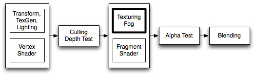

ShaderLab syntax: Fog
Fixed function fog parameters are controlled with Fog command.
Fog commands might have no effect when fragment programs are used; as in that case fog operations sometimes are described in the shader.

Fogging blends the color of the generated pixels down towards a constant color based on distance from camera. Fogging does not modify a blended pixel's alpha value, only its RGB components.
Syntax
- Fog { Fog Commands }
- Specify fog commands inside curly braces.
- Mode Off | Linear | Exp | Exp2
- Defines fog mode. Default is exponential squared fog (Exp2).
- Color ColorValue
- Sets fog color.
- Density FloatValue
- Sets density for exponential fog.
- Range FloatValue , FloatValue
- Sets near & far range for linear fog.
Details
Default fog settings are based on Render Settings: fog mode is either Exp2 or Off; density & color taken from settings as well.